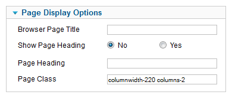
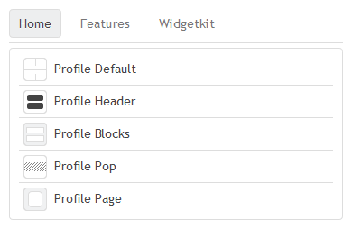
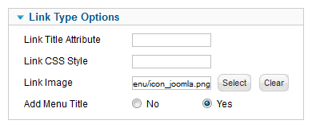

Set up the Joomla menu
This tutorial shows you how to set up the main menu correctly in your Warp based template.
Create the menu
After installation of the template click on Menues » Menu Manager Menu » Add New Menu in the administration menu on top. Give it a name and click on Save & Close. For more detailed instructions on how to create a menu see the Joomla documentation.
If you already have created a menu you can skip this step.
You can now assign menu items to the menu. Click on Menues » YOUR MENU » Add New Menu Item. For additional instructions on how to create a menu item take a look at the Joomla documentation.
Assign the menu as Main Navigation
Before the menu works properly in your template, you have to assign it to a menu module published on the menu module position. To achieve this, click on Extensions » Module Manager » New. Choose Menu. Next publish the module on the menu position of the template.
Menu Styles
Basically there are two menu styles Mega Drop Down and Accordion. The menu will choose its style automatically depending on what position it is published on. The templates menu position will give you the horizontal Mega Drop Down style, while the sidebar positions will render the menu using the Accordion style.
Menu columns

The number of columns and the width of columns of a menu item's drop down menu can be set via its Page Class Suffix. To do that edit the menu item for which you would like to change the amount of columns. On the right hand side, click on Page Display Options button. Set the Page Class Suffix entry to the number of columns you would like to be displayed, i.e. "columns-2". The same is true for the columns width: Set the width you would like it to have, i.e. "columnwidth-200". This will set the width of this menu item to 200 px, ignoring the column width, which is set in the template parameters for all drop down columns.
Using icons in menu items

If you'd like to display icons for drop down menu items, just navigate to the desired level 2 menu item of your Main Menu Menus » Main Menu. On the right hand side you will find a list of parameter categories, i.e. Page Display Options, Link Type Options. Depending on the Menu Item Type there will be a parameter Link Image in one of these parameter categories. I.e. if your Menu Item Type is an External Link, you will find the Link Image parameter in Link Type Options.

Here you can select an image that must be located at /images/stories in your Joomla installation directory.
Add subtitles to menu items

A subtitle can be added to a menu item by simply placing your subtitle text behind two "|" (pipe) characters. Navigate to Menus » Menu Manager. Then, create a new menu item or edit an old one. Place two "|" (pipe) characters behind the titles caption and enter a text for the subtitle.